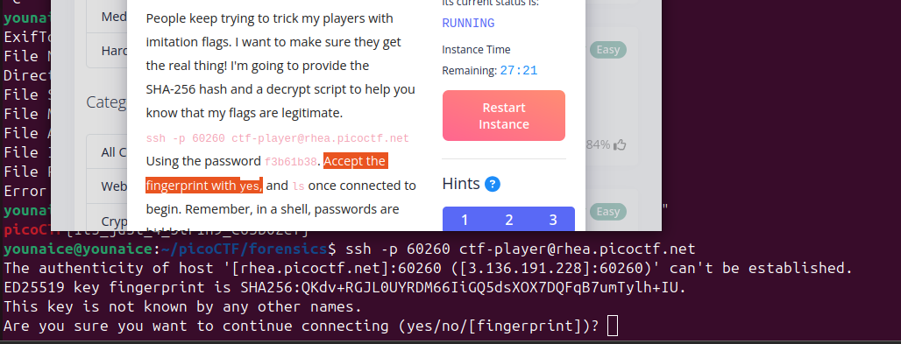
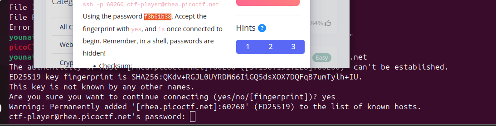
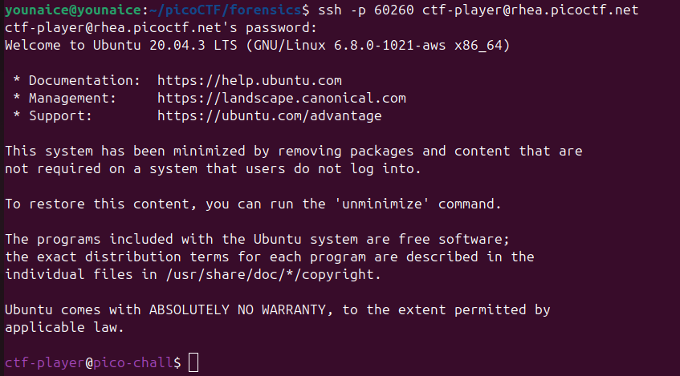
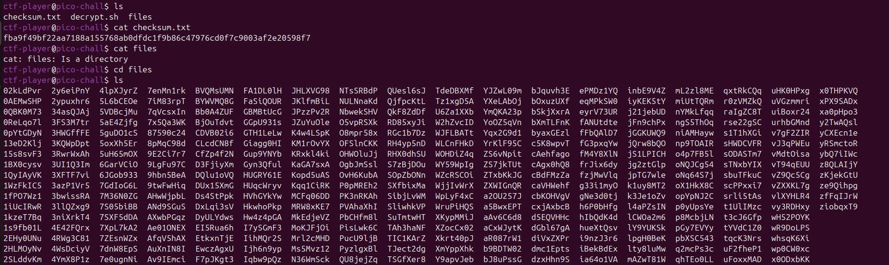
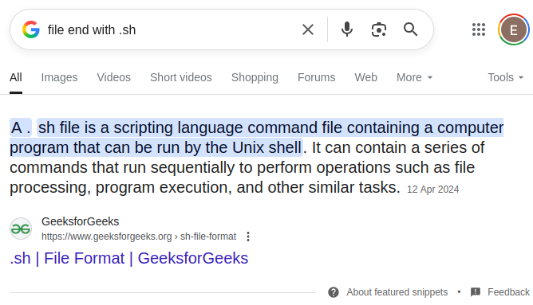
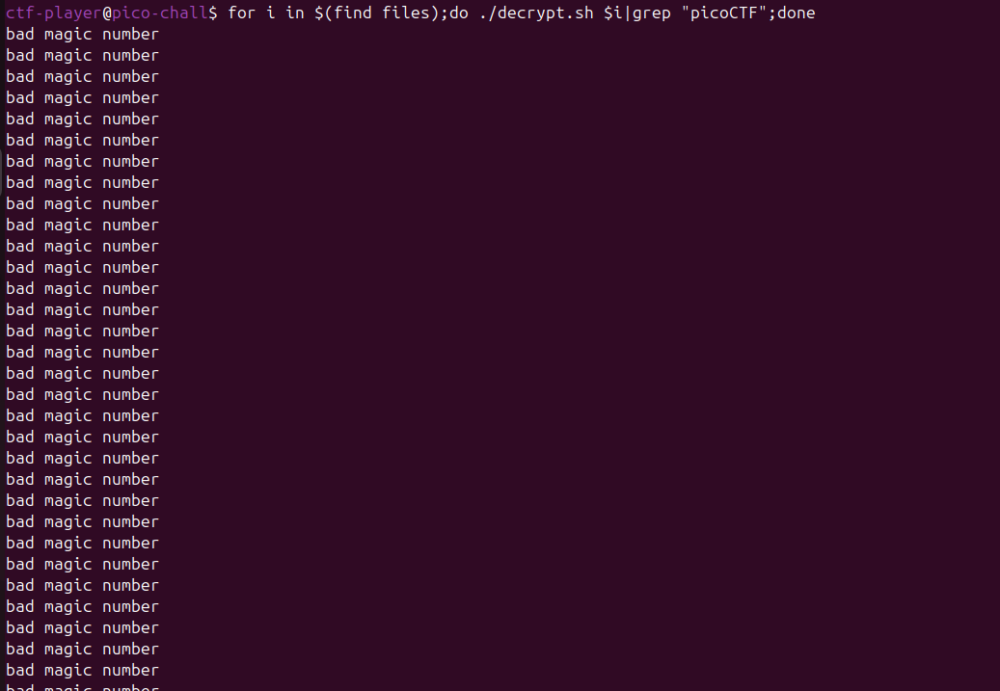
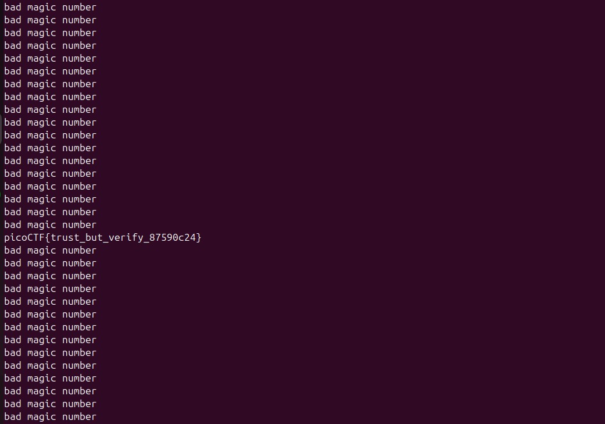

Challenge Description
People keep trying to trick my players with imitation flags. I want to make sure they get the real thing!
I'm going to provide the SHA-256 hash and a decrypt script to help you know that my flags are legitimate.
ssh -p 57825 ctf-player@rhea.picoctf.net Using the password f3b61b38. Accept the fingerprint with yes, and
ls once connected to begin. Remember, in a shell, passwords are hidden! Checksum:
fba9f49bf22aa7188a155768ab0dfdc1f9b86c47976cd0f7c9003af2e20598f7 To decrypt the file once you've verified
the hash, run ./decrypt.sh files/
Writeup Steps
- Copy and paste the network protocol given into terminal
-
Type "yes", and copy the password given by question into the terminal, then enter.
 
-
Now we have logged into the secure shell.

-
Since, question mentioned
lsonce is connected, so I uselsto check the file or directory in it.There's checksum.txt which is same as question given;decrypt.sh;files(directory)
Then I found out there's a lot of file in this directory
-
While for decrypt.sh, I google for this.

It shows that .sh file contains operation or function to execute the program
-
Thus, I write a line of code to loop each of the data and decrypt the data by using the decrypt.sh.

-
Ah yes, the flag is thereeeee

Flag
picoCTF{trust_but_verify_87590c24}Conclusion
This challenge is a classic example of why input validation is critical.